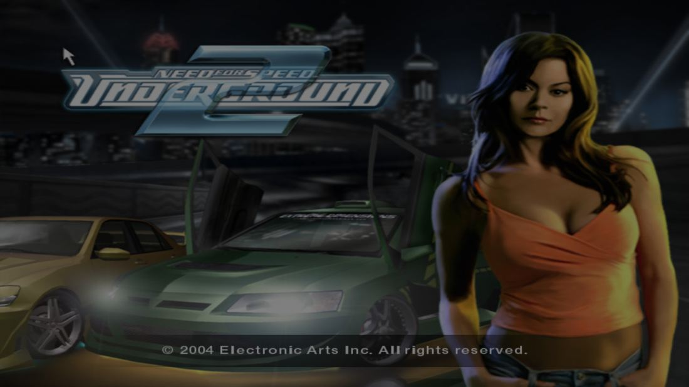
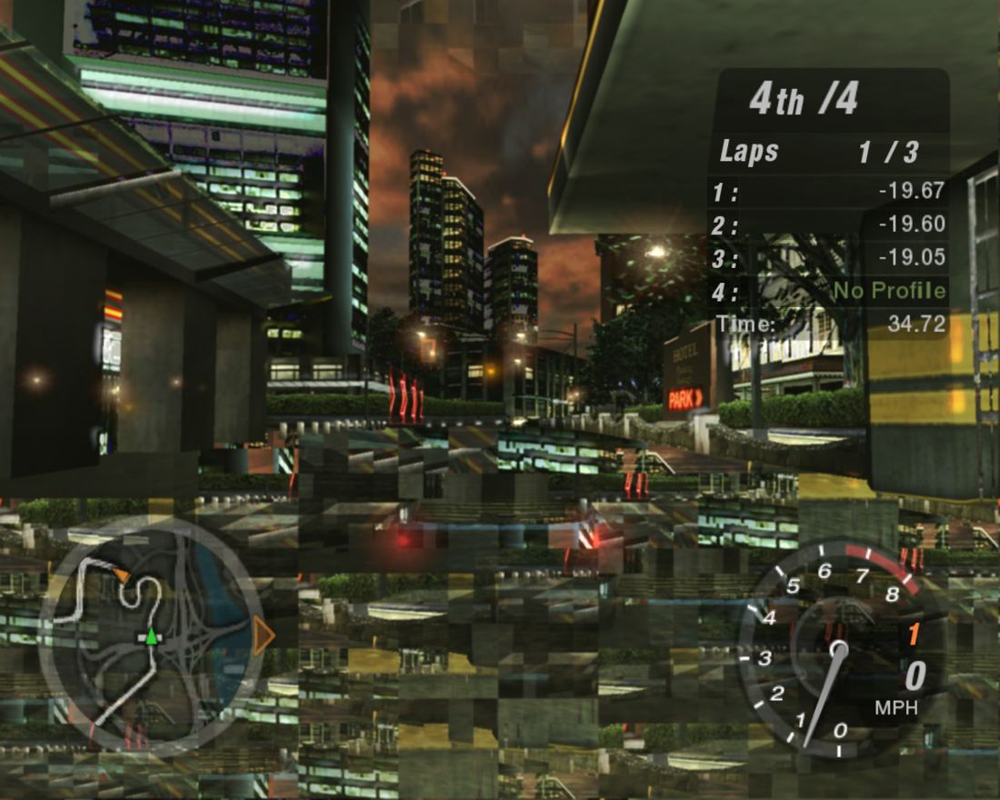
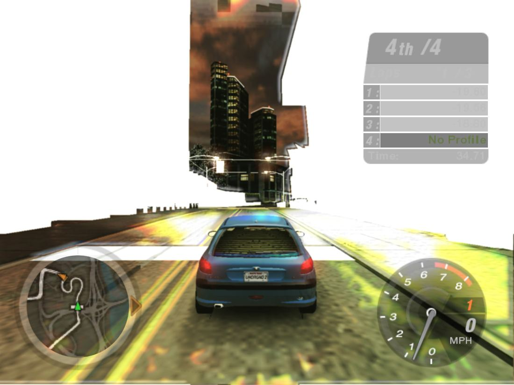
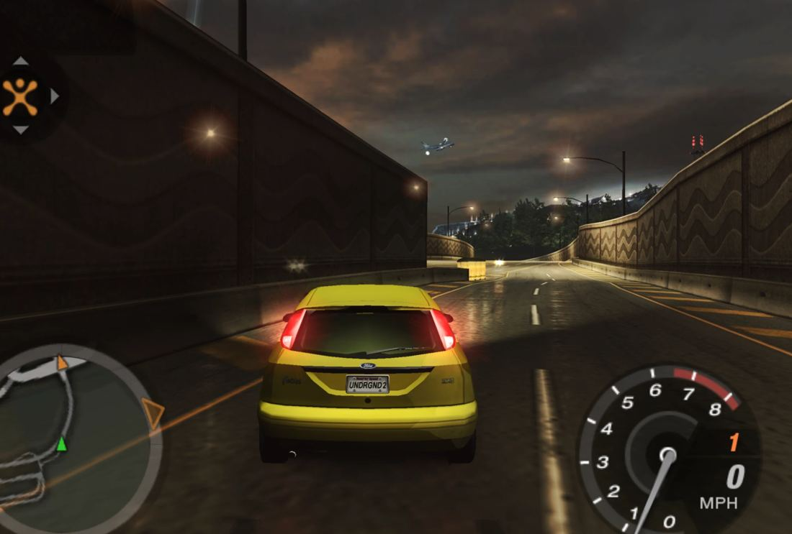
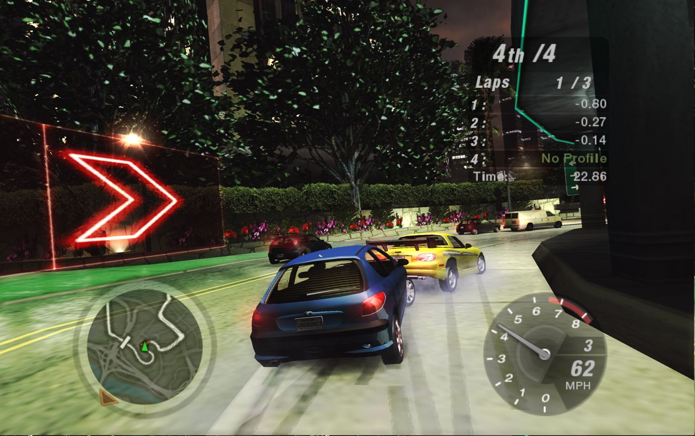

Starting point
24 August 2026: all we had were the game's Windows files.
What we had
SPEED2.EXE: a 32-bit x86 Windows executable (3.68 MB code section, about 1.13 million instructions)- The game's data files (1,261 files, complete)
- No source code. No playable reverse engineering (decompilation) project either; the existing ones are documentation only.
Why it's hard
- macOS hasn't run 32-bit code at all since Catalina (2019). Rosetta 2 also only translates 64-bit x86.
- Aspyr's official 2005 Mac version was written for PowerPC and 32-bit Intel; it doesn't run on today's macOS.
- x86 instructions have a variable length of 1–15 bytes. So in the general case it can't be known for sure whether a 4-byte value in the code is an address or a number.
Method
The game's own code isn't rewritten, it's translated by machine. The only hand-written part is the boundary layer standing in for Windows.
SPEED2.EXE
32-bit x86 machine code and Windows imports
Analysis and translation
instruction decoding with capstone; function discovery guided by the relocation table; translating each function to C
Native build
128 parts, a full build takes about 5 minutes. Output: ARM64 Mach-O
Runtime
Memory, the indirect call table and the layers standing in for Windows
The finding that made the method possible: the EXE's relocation table had been erased from the header, but its data was still physically present in an unnamed section. Parsed by hand it yielded 91,106 absolute addresses, 100% of which pointed to a valid address. This table solved the core problem of static x86 translation, the question "which 4 bytes are a pointer, which are a number?". 96% of the code section was confirmed as code, and the uncertain part dropped to 1.3%.
Memory: the game's 32-bit address space is mapped to a single block. A guest address becomes a real address in a single instruction with ARM64's uxtw addressing mode, so every memory access has no extra cost.
In chronological order
For each day, what was done, what was discovered and what the decision was based on.
-
day 1
Feasibility, choice of method and the first full build
- DecisionWine and a virtual machine were ruled out by the "must be native" requirement. Static recompilation was chosen.
- FindingThe relocation table thought to be erased was found (91,106 addresses, 100% valid).
- On the first day the translator fully translated 96.3% of 23,274 functions. A single missing instruction (
cld) alone was blocking 710 functions. - An address → function table was built for indirect calls (constant-time lookup). 23,278 functions were translated into 115.6 MB of C and compiled without errors in 130 parts. The Windows startup code ran correctly up to 73 system calls deep.
- FindingThe game reported "Buffer overrun detected!". The cause was translator bugs: the evaluation order of the
pushinstruction was wrong, and 25.2% of the functions started from the wrong block. - NegativeGuessing functions' argument counts from the code was only 74.9% correct on 183 known functions. Since a wrong count corrupts the stack this path was dropped and a verified table was used.
Based onCoverage was measured at every stage: code ratio, translated functions, number of unresolved calls. The first unit tests also compared the game's own functions bit by bit with their C library equivalents.
-
day 2
The game runs its own code; the CPU translation is verified
- The first uninterrupted run: 373 frames in 60 seconds, 69,540 draw calls, 64 data files, zero crashes. Four critical bugs were found in the Windows layer, for example threads restarting themselves and TLS not being per-thread.
- The first Metal window opened. Textures (DXT1/3/5) and UI drawing were added. The loading screen was drawn correctly pixel for pixel.
- FindingThere were gray lines on the profile screen: the game was writing the letter codes of parameter names into the shader instead of matrices. The trail led to bugs in the CPU translation.
- DecisionInstead of chasing symptoms we switched to systematic verification. A differential test tool was written that uses Rosetta on the Mac as the "right answer": the same instruction bytes run both on real x86 and in our code and the results are compared. This tool found 15 real bugs. Examples: the
fistprounding mode,adc/sbb, SSE processing only 64 of 128 bits, about 20 missing instructions. In the end zero differences remained in 13,000 random cases; the number of broken matrices dropped from 79,966 to 0. - Observation"The game's flow doesn't continue, it stays at the first scene." Confirmed by measurement: the lock functions (EnterCriticalSection) did nothing, the loader, audio and video threads never woke up. Wake-up counts went from 0 to 145, 46, 34 and 8.
- Finding86% of the frames the game produced were overwritten before reaching the screen. With frame synchronization in place the ratio became 1:1.
Based onError counters (unsupported instructions, unresolved calls, broken matrices), thread wake-up counts and captured screenshots.
-
day 3
The menu opened, the first race was played
- Tools were built:
- Saving the game's screen as a PNG; this ended the loop of asking the user "what do you see" every time.
- Re-enabling the game's own error log, silenced in the retail version.
- FindingThe long hang in the menu was a one-line bug: copying onto the x87 stack (
fld st(0)) read the wrong slot. Since the Windows routine that converts a floating-point number to an integer starts with this instruction, every float → int conversion in the game was broken and the game's timer froze too. Once fixed, the menu, animations and input all worked together. The remaining 722,451 broken matrices also dropped to zero. - The indexed draw path didn't exist at all: 1.58 million calls were silently dropped. Once that path and the depth buffer were added, the car, the showroom and the race appeared.
- FindingMeasurement showed that interpreting vertex shaders on the CPU took about 45% of the time. The interpreter was made 40% faster, but that wasn't enough.
- Audio: the CoreAudio output had never been written; it was added. Then ring buffer wraparound and write cursor bugs were fixed.
- DecisionFor the "identical look" goal, the game's own pixel shaders started being translated to Metal Shading Language and run on the GPU. A general-purpose fixed shader approach was dropped.
- ObservationIt was noticed that reflections depended on the graphics setting, and that the game crashed when the setting was raised. This observation revealed three gaps: device reset (
Reset), field offsets in the surface description and the cube texture calls.
Based onCoverage difference (which functions never run), call counter profile and the behavior of the real game on Windows.
- Tools were built:
-
day 4
Shaders on the GPU; comparison with the Windows reference
- Vertex shaders were translated to Metal too. The draw path time dropped from 34.6 seconds to 5.6 seconds (from 2.4 million to 92.4 million vertices per second). If a shader can't be translated it automatically falls back to the CPU path.
- FindingThe game's registry writes were being discarded. Once made persistent, crashes could be reproduced without waiting for the user and without opening a window. A binary search found the single culprit: the car reflection setting. The cube texture method leaked 4 bytes of stack on every call; for 6 faces that meant a 24-byte shift and a crash.
- ObservationA 400 MB D3D9 call trace (apitrace) taken on Windows was provided. There was no ready-made reader for it on macOS, so we wrote our own (38.3 million calls). The first finding: in 38% of the draws texture coordinates were read from the wrong set.
- FindingThe dark and overly bright image had three root causes:
- State blocks were empty objects; 1.16 million restores per session did nothing.
- 23 legacy shaders came out at half brightness because the brightness shifts weren't applied.
- One blend mode wasn't mapped and the scene was added on top of itself.
- Audio: the buffer size was read from the wrong field, the music was both fast and choppy. The menu music didn't stop in the race. Latency dropped from 0.55 seconds to 0.27 seconds.
- FindingThe game's resolution table has 6 rows, all 4:3. Picking row 7 overflowed the game's own array.
Based onComparing the same scenes with Windows screenshots, the apitrace trace, and measuring the difference by skipping or coloring a single pass.
-
day 5
The bottleneck was measured, the optimization direction set
- The pre-race cutscene went from 4.6 fps to 30 fps: the virtual clock's per-frame cap was wrong.
- FindingThe music slowed down in the race because the game clock was tied to fps. The clock was tied to real time; the ratio of game clock to real time went from 0.885 to 0.998.
- FindingThe frame budget was measured: the GPU used only 20% of the budget, our graphics layer was 1.8 ms, the remaining ~75% was the game's translated x86 code.
- DecisionOptimization would happen in the translated code, not on the graphics side.
- Lazy flag computation: of the six status flags x86 computes on every arithmetic instruction, only those read later are computed. Together with the -O3 build the race frame went from 18.7 ms to 15.7 ms (19%).
- FindingThe capstone library reports the FPU status bits of x87 instructions as if they were arithmetic flags. This bug crashed the first version in 12 seconds; an audit tool (
flagaudit) was written to find it. - Face culling was never applied; that was the cause of the flickering on the car door and building edges. The
expptranslation, which caused the wrong bone selection on crowd figures, was also fixed.
Based onmacOS
sampleprofile, the GPU busy counter, 439 instruction tests and an A/B comparison after every change. -
days 6–9
Visual accuracy, 1080p and speed
- FindingThe thin lines cutting across the screen came from where the texture coordinate was selected: selecting in the pixel shader broke the GPU's derivative computation. The selection was moved to the vertex side.
- FindingFog was never applied; the game set up the fog setting 5.3 million times. The mosaic in the sky came from sampling from the screen (the Apple GPU's 32-pixel tile boundaries). We switched to a real copy.
- 1080p and widescreen: the aspect difference is compensated with Hor+, the image isn't stretched. The last row in the menu is shown to the game as 1600x1200 and to the user as 1920x1080; so the game's table doesn't overflow.
- Finding61% of the frame was spent asleep in an unnecessary 60 Hz brake. That was the real reason for the earlier "the optimization didn't help" results. The brake was removed and D3D call dispatch (377 million calls in a race) was switched from name comparison to numeric ids. Result: 60.3 → 98.8 fps.
- DecisionThe measurement method was changed. Comparing single runs had ±7% noise; matching frames by real-time buckets brought the noise down to 0.1%.
- NegativeMeasured and ruled out: profile-guided optimization (PGO, 0.9%), taking flag analysis further (clang was already doing it) and something thought to be a crash (not a game bug, a race during shutdown).
- Car reflections: real cube textures were added. Since legacy shaders don't declare the texture type, two versions of every shader are generated and picked at draw time. The cost is too small to measure.
Based onMeasuring the line angle with a Hough transform (37°, the full-screen diagonal), mip disabling experiments, paired performance measurement.
-
packaging
A double-clickable macOS app
./pack.sh→NFSU2.app. Two silent obstacles that would keep the game from ever opening on another machine were found:- The binary was stamped with the macOS version of the building machine.
- The
-mcpu=nativesetting could make a binary built on a newer Mac crash on an M1.
- The game data goes next to the bundle, not inside it: a signed bundle can't be written to and writing breaks the signature. An ad-hoc signature was used for Gatekeeper and measured; it doesn't pass without notarization.
-
assessment
Legal framework and project assessment
- DecisionOnly the converter (translator and runtime) will be shared. The game data and the EXE won't be distributed; users bring their own copy. Basis: rulings on reverse engineering for interoperability (Sega v. Accolade 1992, Sony v. Connectix 2000). Known risks: circumventing copy protection (DMCA §1201), trademark use, screenshots.
- Similar work was reviewed: N64Recomp (Zelda, Mario Kart 64…) and XenonRecomp (Sonic Unleashed…). All of them translate from consoles (MIPS, PowerPC) to PC. This project's difference: from x86 PC to ARM64 and from Direct3D 9 to Metal.
- The project was assessed against 12 criteria. Originality, difficulty and measurability came out strong. Generalizability, literature and reproducibility came out weak (details below).
-
sharpness
Blur on a Retina display
- ObservationWindows and macOS images of the same scene were compared; the macOS image was blurry.
- FindingThe 1280x960 image was being scaled up about 1.91x on screen. The game now draws at the display's real pixel count (2448x1836). The frame time didn't change (10.6 ms); GPU time went from 2.0 ms to 4.9 ms.
-
HLE
High-level emulation (HLE) of the D3DX effect library
- Finding47% of the game's time was spent in Microsoft's D3DX9 effect library embedded in the game. The same state was recomputed 1,398 times per frame, and 95.8% of the inputs hadn't changed.
- DecisionWork started on emulating the library's behavior at a high level (HLE). Every "this step can be skipped" decision is proven with a verification mode that reruns the original and compares memory and device state.
- Stage 1, remembering state values: the game code's CPU time per frame dropped from 10.9–12.3 ms to 8.1 ms (29%); the race went from 90 fps to 119 fps. 0 differences in over 2.4 million checks. Stage 2, recording device calls: another 5% gain; 0 differences in 3.5 million checks.
- NegativeStage 3, skipping a whole pass: verification showed that 78% of the hits were wrong. The game changes textures on every draw and they come from a separate table, not from the parameter data. The code stays but is off; the negative result was documented.
Based onThe verification mode of each stage and measurement pinned to 60 Hz. At the 120 Hz display limit the frame time hid the CPU gain.
-
visual
Lights visible through walls, and fullscreen
- ObservationFrom the beginning, city lights and some cars were visible through walls.
- FindingThe game never uses occlusion queries; hiding is done with an ordinary depth test. The Metal layer, however, had a single depth buffer, recreated every time the target size changed. Since a frame switches between 320x240, 128x128 and 640x480 targets, depth information was lost on every return to the screen. The fix is as in D3D9: every depth surface has its own texture.
- Fullscreen: the game is drawn at the display's real pixels (3024x1898) and widescreen. Switching during play imitates the alt-tab path on Windows: the device is reported "lost" and the game rebuilds its own graphics for the new size.
- 192 screenshots taken during development were recovered from the chat logs.
-
current state
Cursor alignment and 4K
- ObservationThere were two cursors on screen at different positions.
- FindingThe game scaled the cursor position by the fixed 1280x720 window size the layer reported; at 1280x960 this caused a 1.33x vertical offset. The cursor was measured by forcing it to two known positions and fixed. The macOS cursor is now hidden in the game area.
- 4K was measured: at 3840x2160 the race goes from 8.36 ms to 8.82 ms (about 113 fps). The image is clean.
Decisions and reasons
The choices that set the project's direction, the evidence they rest on and the option ruled out.
| Decision | Reason | Ruled out |
|---|---|---|
| Static recompilation24 Aug | The "no layer in between" requirement. Finding the relocation table made the method feasible. | Wine, virtual machine |
| Automatic translation preserving behavior24 Aug | Rewriting 23 thousand functions by hand would take years; the goal isn't to recover the source code but to make the game behave the same. | Manual decompilation |
| Systematic verification instead of symptoms25 Aug | A symptom had been chased for hours. The test tool against the real CPU found 15 bugs in a single day. | Guess and try |
| Translating shaders and running them on the GPU26–27 Aug | CPU interpretation was 45% of the time and an identical look was the goal. | Fixed shader, CPU interpreter |
| Taking Windows as the reference27 Aug | Screenshots of the same scenes and an API call trace were used to make the "identical" claim measurable. | Eyeballing |
| Looking for speed in the translated code28 Aug | Frame budget: GPU 20%, graphics layer 1.8 ms, the rest x86 code. | Graphics optimization |
| Removing the 60 Hz brake2 Sep | Once the clock was tied to real time it had no reason left; 61% of the frame was sleep. Game speed doesn't change (ratio 0.999). | — |
| Providing widescreen via a menu row2 Sep | The game's table couldn't be found in memory; row 7 overflows. | Patching the table |
| Sharing only the converter12 Sep | There are precedent court rulings; no EA asset is distributed. | Distributing a ready-made .app |
| Verified HLE; dropping Stage 323–24 Sep | The library was 47% of the time. Stage 3 gave 78% wrong hits in verification. | Unverified cache |
| Fullscreen through the game's own reset path24 Sep | Render targets depend on the device size; the game's own Reset sets them all up correctly. | Resizing from outside |
Based on what: verification methods
A change was only accepted after it was measured. The tools used:
Instruction tests
Hand-encoded x86 machine code and expected results derived from the Intel documentation. Runs automatically on every build.
Testing against a real CPU
The same instruction bytes run as real x86 on Rosetta and through our translation, and the results are compared.
Windows reference trace
38 million D3D9 calls of the real game on Windows; answers "with what state is it drawn there?" without guessing.
Frame and pass isolation
Saving a frame as a PNG, summarizing draws by grouping them, skipping or coloring a single shader pass.
Profile and run report
Functions that never run, the code taking the most time, and counters like "unsupported instructions: 0, unresolved calls: 0".
Reproduction without a user
A key sequence that gets from the menus into a race the same way every time, and persistent settings. Bugs can be reproduced without opening a window.
Paired performance measurement
A single run had ±7% noise. Matching frames to the same game moment brought the run-to-run difference down to 0.1%.
HLE verification mode
For every skipped step the original is rerun and memory and device state are compared; zero differences in millions of checks.
Performance
Frame rate in a race, milestones. The values were measured on different days; they show the trend, not an exact comparison.
Where the frame time goes (28 August measurement):
This measurement showed that optimization had to happen in the translated code, not on the graphics side. All later gains came from there: lazy flag computation, numeric call dispatch and the D3DX HLE. Today the race hits the display's 120 Hz limit on an M1 Pro. In the measurement pinned to 60 Hz the game code spends 7.5 ms of CPU per frame; before the D3DX work this was 10.9–12.3 ms. Resolution barely affects speed: 1280x960 and 2448x1836 run at the same speed, and at 4K the frame time grows by 5%.
Images
A selection of frames taken during development. All 192 images are in the project folder under screenshots/.











Open issues and limitations
Known gaps. Documenting them was preferred over hiding them.
In the game
- The intro videos (VP6 format) are skipped; there is no decoder. Note: the first videos don't play in the archived Windows copy either.
- There are four visual items that can't be decided without a reference: HUD row seams, crowd figures, the ghost rectangle on the TRAX screen and light streak overlays. There is no objective measurement for these; a Windows image of the same scene is needed.
- Audio latency is about 0.27 seconds. 0.26 seconds of that comes from the game's own buffer behavior, the same on Windows.
As a project
- Verified on a single game only (a single EXE version); generalizability hasn't been shown yet.
- The project folder isn't a git repository. The history was kept in
PROJECT.md(1,309 lines),D3DX_HLE.mdand 44 note files. - Measured only on an M1 Pro with macOS 26. The app was built with a macOS 11 baseline but hasn't been tried on an older system. Without notarization it triggers a Gatekeeper warning.
Next steps for the thesis
Recommendations from the 12 September assessment. The plan for extra features, bug fixes and writing in the coming period.
Research side
- Sharpening the contribution: empirical evidence for the claim "an x86 desktop game can run on ARM64 at near-native speed with static recompilation and shader translation"; a classification of which x86 and D3D9 behaviors resist static translation the most.
- Literature: binary translation (static/dynamic), API translation (DXVK-like) and a comparison with Rosetta 2.
- Generalizability: partial verification on a second, different Direct3D 9 game. This is the strongest answer to the "specific to a single game" criticism.
Process side
- Start keeping a version history with git (reproducibility).
- Legal and ethical section: sharing only the converter, precedent rulings, trademark and DRM notes.
- Statement of working method: development was carried out under the project owner's direction using an AI coding assistant (Claude Code). The goals and constraints, priorities, observations made by playing the game, the Windows references (screenshots, the apitrace trace) and direction decisions such as the D3DX HLE came from the project owner; implementation, measurement and debugging were done together with the assistant. The department's AI use policy should be clarified with the advisor.
Sources: the logs of six development sessions (24 August – 27 September 2026), PROJECT.md, D3DX_HLE.md, the project note files and 192 screenshots. All numbers come from measurements made in those sessions.